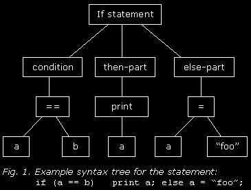

Implementing a Scripting Engine
by Jan Niestadt
This article originally appeared on Flipcode.
Part 4: The Symbol Table & Syntax Tree
Introduction
If we are to do something useful with the lexer and parser we created in the last two parts, we need to store the information we can gather from the program in data structures. This is what we're going to do next. Two important components are involved in this: the symbol table and the syntax tree.
The symbol table is, like the name suggests, a table that contains all symbols used in our program; in our case, all the string variables, and the constant strings too. If your language includes functions and classes, their symbols would be stored in the symbol table too.
The syntax tree is a tree representation of the program structure; see the picture below for the idea. We use this representation in the next part to generate intermediate code. Although it is not strictly necessary to actually build the syntax tree (we already have all the information about program structure from the parser), I think it makes the compiler more tranparent, and that's what I'm aiming for in this series.

This is the first part that includes 'real' code, and before you look at it, I'd like to make it clear that this code was written to be easily understandable rather than well-structured. It will suffice for the compiler we're making here, but in a real-world script compiler you'll want to do a lot of things differently. I'll try to mention these things as we come across them.
Passing Information Between Rules
Obviously, we have to add functionality to our parser; particularly, when we find a symbol we enter it into the symbol table -- but we also want the "parent" rule (the rule that actually uses the identifier) to have access to the symbol description.
Something similar is required when we're building a syntax tree: we want the parent rule to have a pointer to the nodes of his 'child rules' (the rules the parent rule is constructed of).
Well, remember the yylval union? Yacc uses this to pass information between the rules, too. Every rule can have an associated field in the yylval union; this is the rule's type. At the top of string.y you can see type declarations like the following:
%type identifier string
%type statement expression
symbol and tnode are new members of the union; they represent a pointer to a symbol description and a pointer to a syntax tree node, respectively.
Now the statement rule uses these types as follows:
| expression END_STMT {$$ = new TreeNode (EXPR_STMT, $1);}
This means: if you find an expression statement, construct a new tree node (and 'return' the node pointer) of type EXPR_STMT with one child: the expression that the statement is composed of. So $$ represents the 'return value' of a rule, and $1 is the value returned by the first symbol in the rule definition (expression). $2 has no meaning here, because the lexer doesn't set an yylval-member for the token END_STMT.
I hope this explanation is clear enough, because it is important. Essentially, the rules form a hierarchy and every rule can return a value to a 'higher' rule.
Now let's see what data structures we use for the symbol table and the syntax tree.
The Symbol Table
The symbol table in our example contains very little information; basically it's only the name of the variable and the line in which it was first declared. We will use it to store more data later on, though.
The implementation is very simplistic: it just builds a singly-linked list of symbol descriptions and searches this list linearly when we retrieve a symbol (have a look at the symtab.cpp, it's really straightforward). For a real compiler, the symbol table is usually implemented as a binary search tree or a hash table, so symbols can be looked up much faster.
All we need to do to enter our symbols into the table when the parser finds them is this:
identifier
: ID
{
$$ = st.Find ($1);
if ($$ == NULL) { // doesn't exist yet; create it
$$ = new SymDesc ($1, STR_VAR, NULL, lineno);
st.Add ($$);
}
}
;
We treat string constants as constant variables, so we generate a name for them and also enter them into the table.
Note that a more advanced compiler would probably let the lexer store and retrieve identifiers. This is because in a complex language there are many different meanings identifiers can have: variables, functions, types, etc. The lexer could retrieve the identifier description and directly return the appropriate token to the parser. Since our identifiers are always variables, I just let the parser handle them.
The Syntax Tree
For the syntax tree I have created a very simple TreeNode class. It just stores pointers to children and some additional information (the node type and a link to a symbol if applicable). Have a look, there's nothing complicated going on in there.
As you saw before, we can easily build our syntax tree from the recognized parser rules:
equal_expression
:expression EQUAL assign_expression {$$ = newTreeNode(EQUAL_EXPR, $1, $3);}
| assign_expression {$$ = $1;}
;
You can see that we sometimes just pass the information from a child rule on to our parent rule unchanged; if your equal_expression is actually just an assign_expression, there's no point in making an extra node for it; you just use the one created in assign_expression. Remember that the only reason we created so many expression rules was to unambiguously handle operator precedence.
Compilation of this part (and the following parts) is the same as for the previous parts. The program still accepts syntactically correct programs, but now shows a dump of the symbol table and syntax tree it has built.
That's Pretty Cool, But...
Okay, so it reads the program and it analyzes it. But it doesn't really do anything smart or useful with it, does it?
Well, no. Not yet. We still have some more components to implement. The next part will cover semantic checking and intermediate code generation. Those will take us a long way towards a compiled program.
I hope you don't think it's going too slow, but I want to focus on each component separately, not just rush through things. If you understand all this stuff immediately, be happy with that and experiment!
See you next time.
Next: The Semantic Checker & Intermediate Code Generator
Prev: The Parser